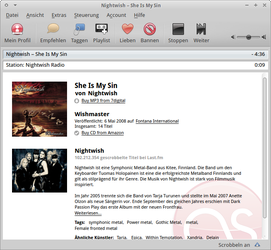
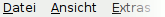
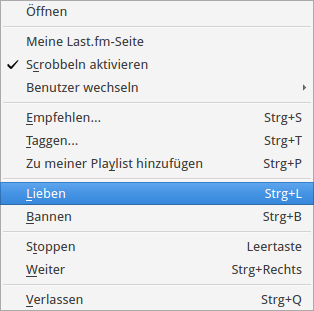

LastFM Player
Archivierte Anleitung
Dieser Artikel wurde archiviert, da er - oder Teile daraus - nur noch unter einer älteren Ubuntu-Version nutzbar ist. Diese Anleitung wird vom Wiki-Team weder auf Richtigkeit überprüft noch anderweitig gepflegt. Zusätzlich wurde der Artikel für weitere Änderungen gesperrt.
Anmerkung: Der Last.fm-Radiodienst wurde am 28.04. 2014 komplett eingestellt
Zum Verständnis dieses Artikels sind folgende Seiten hilfreich:
Last.FM ist eine Webseite und ein Internetradio ("personalised online radio station"), das entwickelt wurde, um Nutzern neue Musik bekannt zu machen. Es ist eine ehemalige Schwesternseite von Audioscrobbler, mit dem es sich früher eine Musikdatenbank teilte. Musikverlage und Musiker werden ermuntert, Last.FM Lizenzen zum Abspielen ihrer Musik zu erteilen, da dies, zumindest in der Theorie, ihr CD-Verkäufe erhöhen wird. Last.fm hat derzeit ein Verzeichnis von über 80 Millionen einzelnen Songs und davon über eine Million für sein Internetradio zum Streaming vorrätig, sowie 150.000 kostenlose MP3-Downloads. Last.FM fusionierte im Jahr 2005 mit Audioscrobbler und enthält somit auch dessen Funktionen wie zum Beispiel einen Datenbank-Editor, einfache Navigation zu verlinkten Profilen (zum Beispiel Freunde und musikalische Nachbarn) und erweiterte Charts. Last.FM-Streams können im MP3-Format mit 128 kbit/s bei einer Samplingrate von 44.1 kHz abgerufen werden. (Quelle)
|  |
| LastFM Player |
Registrierung¶
Als erstes braucht man ein Konto bei Last.FM, dieses bekommt man hier  . Die erforderlichen Daten (Benutzername, Kennwort, Emailadresse,...) eingeben, AGBs lesen und mit "Melde dich an und erstelle dein Profil" anwählen. Nachdem man die Daten eingegeben hat, geht es weiter mit der Installation. Eine weitere Möglichkeit besteht darin, zuerst das Programm zu installieren und nach dem ersten Programmstart "Ein neues Last.fm-Benutzerkonto registrieren" anzuwählen. Hier öffnet das Programm einen Browser mit oben genannter Internetseite. Beide Methoden führen zum selben Ziel.
. Die erforderlichen Daten (Benutzername, Kennwort, Emailadresse,...) eingeben, AGBs lesen und mit "Melde dich an und erstelle dein Profil" anwählen. Nachdem man die Daten eingegeben hat, geht es weiter mit der Installation. Eine weitere Möglichkeit besteht darin, zuerst das Programm zu installieren und nach dem ersten Programmstart "Ein neues Last.fm-Benutzerkonto registrieren" anzuwählen. Hier öffnet das Programm einen Browser mit oben genannter Internetseite. Beide Methoden führen zum selben Ziel.
Zweitzugang¶
Um einen weiteren Zugang anzulegen entweder die Internetseite erneut aufrufen oder im Programm "Extras -> Optionen -> Benutzerkonto -> Ein neues Last.fm-Benutzerkonto registrieren" anwählen.
Installation¶
Der LastFM Player ist in den offiziellen Paketquellen enthalten. Zur Installation [6] wird folgendes Paket benötigt:
lastfm (universe)
 mit apturl
mit apturl
Paketliste zum Kopieren:
sudo apt-get install lastfm
sudo aptitude install lastfm
Fremdpaket¶
Der Player ist nicht mehr über Last.fm beziehbar, dort ist nur noch der Nachfolger Last.fm Scrobbler zu erhalten.
Player¶
Beim ersten Start des Players entweder vorhandene Zugangsdaten eintragen oder ein neues Konto anlegen und auf "OK" klicken.
| Last.fm-Player | |
| Schaltfläche | Beschreibung |
|  | Einstellungen am Player vornehmen |
| Station wechseln. Außerdem: Informationen zu gerade gespieltem Song, Radiostationen und dem eigenen Profil. | |
| Das wiedergegebene Stück weiterempfehlen. | |
| Schlüsselwörter zu dem Song abgeben/einsehen. | |
| Stück zur eigenen Wiedergabeliste hinzufügen. | |
| Bewertungen zum aktuellen Song abgeben. | |
| Steuerung des Players. | |
Love / Ban¶
Jede Stimmabgabe - egal ob positiv oder negativ - wirkt sich auf den persönlichen Radiosender aus. Es entsteht ein auf den eigenen Geschmack zugeschnittenes Musikangebot - LastFM errechnet aus den Angaben weitere Empfehlungen.
Benutzung¶
Mein Profil¶
Nun öffnet sich das Programm. Hinter dem Menü "Mein Profil" verbergen sich diverse Unterpunkte, welche in der Seitenleiste durch anwählen von ein- bzw. ausgeblendet werden.
Station starten¶
Um eine andere Station zu besuchen wählt man "Station starten" an und sucht nach den gewünschten Kriterien.
Radiostationen¶
Unter diesem Punkt findet man Empfehlungen, Lieblingslieder et cetera. Um diese aufzurufen genügt ein einfacher "Doppelklick" auf die gewünschte Station. Diese Funktionen sind teilweise aber Abonnenten vorbehalten oder müssen über die eigene Profilseite von Last.fm eingestellt werden.
Eigene Playlist wiedergeben¶
Hinweis:
Seit dem 17.11. 2010 ist die Wiedergabe von Playlists und einige anderen Stationen auch für Abonnenten generell nicht mehr möglich (siehe dazu diese "Erläuterung" auf last.fm)
Benutzergruppen¶
Um den eigenen Musikgeschmack mit anderen zu teilen, kann man sich Benutzergruppen anschließen. Da gibt es natürlich nur eine: UbuntuUsers.de . Um sich der Gruppe (oder einer anderen) anzuschließen auf der Internetseite einfach die Option  "Gruppe beitreten" anwählen. Die gewählte Gruppe ist nun im eigenen Profil verfügbar. Um die Gruppe wieder zu verlassen
"Gruppe beitreten" anwählen. Die gewählte Gruppe ist nun im eigenen Profil verfügbar. Um die Gruppe wieder zu verlassen  "Gruppe verlassen" wählen.
"Gruppe verlassen" wählen.
Datenschutz¶
Sofern man nicht möchte, dass das Programm Daten über gehörte Musik an Last.fm überträgt sollte man die Funktion scrobbling deaktivieren. Hier entweder unter
"Extras -> Scrobbeln aktivieren"
diese Funktion (de)aktivieren. Alternativ kann man im Playerfenster in der Ecke unten rechts mit einem Mausklick auf "Scrobbel an" / "Scrobbeln aus" die gewünschte Veränderung vornehmen. Weitere Einstellungsmöglichkeiten findet man unter
"Extras -> Optionen -> Scrobbeln"
Die Einstellung, welche Informationen man übermitteln möchte und welche nicht ist in der aktuellen Version nicht mehr gegeben; es lässt sich nur noch festlegen, nach welcher Abspieldauer ein Titel gescrobbelt wird. Laut Last.fm werden aber nur Daten wie Artist, Track und Album übermittelt - nicht die Art der Wiedergabe (mp3 oder CD).
Mehrbenutzersystem¶
Unter dem Menüpunkt "Account" können weitere Benutzer hinzugefügt oder aber auch entfernt werden. Zur optischen Unterscheidung der Zugänge kann unter
"Extras -> Optionen -> Benutzerkonto"
die Farbe des Icons angepasst werden. Der aktive Nutzer ist im Panel zu sehen.
Einstellungen¶

Trayicon¶
Nach dem Programmstart erscheint in der Systemleiste das Icon für den aktiven Account. Hier können durch einen Rechtsklick Basisfunktionen aufgerufen und der Player beendet werden. Ein Linksklick blendet den Player ein bzw. aus.
Zum (de)aktivieren des Icons unter
"Extras -> Optionen -> Benutzerkonto"
den Haken bei "Anwendungsicon in der Taskleiste anzeigen" anwählen.
Tastenkürzel¶
| Tastenkürzel | |
| Taste(n) | Beschreibung |
| Wiedergabe stoppen | |
| Strg + → | zum nächsten Track wechseln |
| Strg + ↑ / Strg + ↓ | Lautstärke verändern |
| Strg + M | Mute an/aus |
| Strg + L | Love Track |
| Strg + B | Ban Track |
| Strg + O | Optionen |
Deinstallation¶
In der Regel genügt es das Programm in der Paketverwaltung zu deinstallieren. Lediglich bei den folgenden Installationsarten muss man von Hand die Dateien / Ordner entfernen:
Einzelplatzrechner¶
Es genügt den Ordner zu löschen.
Alternativen¶
Hinweis:
Last.fm beschränkt den Zugriff dienstfremder Musikplayer auf seine Dienste immer mehr (was auch mit dem Eigentümer CBS zu tun haben könnte...). Gegebenenfalls ist die hier vorgestellte Software in ihrer Funktionalität eingeschränkt oder erhält gar keinen Zugriff mehr auf Dienste von Last.fm!
Seit Anfang 2013 können nur noch bezahlende Kunden "third-party"-Anwendungen zur Wiedergabe von Last.fm-Sendern verwenden; das Scrobbeln bleibt aber auch für "einfache" Accounts möglich.
Nachfolge-Programm ist der Last.fm Scrobbler, der mehr auf das Scrobbeln und Verwalten ausgelegt ist. Wer seine Musik lieber in seinem eigenen Player hören möchte, z.B. mit Audacious, sollte das Programm LastFMProxy nutzen. Als weitere Alternativen sind Vagalume und Rhythmbox zu nennen.

- Erstellt mit Inyoka
-
 2004 – 2017 ubuntuusers.de • Einige Rechte vorbehalten
2004 – 2017 ubuntuusers.de • Einige Rechte vorbehalten
Lizenz • Kontakt • Datenschutz • Impressum • Serverstatus -
Serverhousing gespendet von